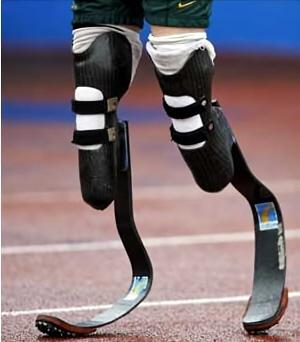

Acteurs principaux
Etudes scientifiques:
Une étude scientifique réalisée par le professeur Peter BRUEGGEMAN conclut qu'un athlète ayant des prothèses tels que Oscar Pistorius est avantagé par rapport à un coureur sans technologie. Notamment en effectuant des tests avec 5 coureurs témoins, le professeur établie que la dépense énergétique de Pistorius est moindre par rapport à celle des témoins pour un résultat similaire.
http://www.iaaf.org/news/news/oscar-pistorius-independent-scientific-stud-1
Staff médical:
Il est important de considérer la réhabilitation d’un amputé comme une tâche multidisciplinaire répartie entre les médecins de réadaptation, les prothésistes, les kinésithérapeutes. Le but étant de palier le manque de capacités physiques nécessaires à la pratique de l'épreuve que chaque athlètes désirent pratiquer en compétition.
Conception:

La conception d'une prothèse demande un matériel de pointe, des scanners vont prendre les mesures exactes afin d'avoir une prothèse la plus adaptée possible. Chaque prothèse est unique. De plus le matériau le plus utilisé est le KEVLAR un matériau très coûteux. De nombreuses entreprises ont pris part à ce marché. C'est pourquoi une prothèse coûte environs 20000€. Cependant un autre type de prothèse fait son apparition avec l’avènement des imprimantes 3D, celle ci permettront de concevoir des prothèses à moindre coût (environs 100$).
http://www.journal-du-design.fr/design/prothese-futuriste-imprimee-en-3d-par-william-root-54225
http://www.eng.warwick.ac.uk/~esscbh/cv/publications/Ispo_2001_CVincent.pdf
http://tpe-prothese-sportive.blogspot.fr
http://www.protipmedical.fr/557.html
Athlètes:

Déjà plusieurs athlètes de haut niveau ont concouru à des compétitions contre des valides. Prenons les exemples de Oscar PISTORIUS et Markus REHM. Oscar Pistorius, surnommé « the blade Runner » est le premier athlète a concourir au JO alors qu'il est amputé et qu'il possède une prothèse a chaque pied. Markus REHM, sauteur en longueur, est devenu le premier athlète handisport à remporter un titre national chez les valides.
http://www.lequipe.fr/Athletisme/Actualites/Rehm-trop-loin-pour-etre-vrai/486772
http://fr.wikipedia.org/wiki/Oscar_Pistorius
Réglementation:
En 2006 l'IAAF ( International Association of Athletics Federations ) publie un règlement 144.2 interdisant le recours à «tout dispositif contenant ressorts, roues ou autres éléments fournissant à l'utilisateur un avantage sur un autre athlète n'utilisant pas ce dispositif». Les conditions mécaniques, entre un ressort et un système musculo-articulaire, sont différentes. Ce n'est pas le même saut en longueur. C'est pourquoi Markus Rhem ne sera pas autorisé à concourir contre des valides au championnat d'Europe athlétisme, le motif invoqué est un avantage déloyal du à sa prothèse. Cependant cité par le New York Times, un autre expert, Peter Weyand, professeur en physiologie et biomécanique à la Southern Methodist University (USA), en arrive à une conclusion différentes : « Il n’existe aucune étude qui permette de prendre et de justifier une telle décision ».
http://tpe2013-prothese.e-monsite.com/pages/polemique-sur-oscar-pistorius.html
http://tpe-prothese-sportive.blogspot.fr/
http://www.lequipe.fr/Athletisme/Actualites/Rehm-trop-loin-pour-etre-vrai/486772
Média:
De vives critiques sont enregistrées chez les spectateurs car la médiatisation des jeux paralympiques sera moins importantes que celle jeux olympique en 2012 à Londres. "Le handisport n'est pas assez médiatisé. C'est sûr qu'on a envie de plus", regrette l'escrimeur Romain Noble, 32 ans. Mais grâce à une pétition France télévision changera sa programmation et acceptera de diffuser les jeux. D'autres part, lors du championnat du monde d'athlétisme la poste met en ventre des timbres à l'effigie du championnat.
http://www.cairn.info/revue-reliance-2005-1-page-28.htm
https://www.change.org/p/france-t%C3%A9l%C3%A9visions-donnez-aux-jeux-paralympiques-la-place-qu-ils-m%C3%A9ritent-ftvjo
http://www.lemonde.fr/jeux-olympiques/article/2012/08/28/jeux-paralympiques-les-sportifs-decus-de-l-absence-de-directs-a-la-tv-francaise_1752357_1616891.html
http://www.lemonde.fr/archives/article/2002/06/08/athletisme-handisport_4230217_1819218.html?xtmc=athletisme_handisport&xtcr=1
Cybathlon:
La première compétition de Jeux Bioniques va avoir lieu en 2016 en Suisse. Il s’agira de la toute première fois que des athlètes de haut niveau augmentés par des prothèses bioniques s'affrontent. L’objectif principal est de sensibiliser les foules aux potentiels des membres artificiels.